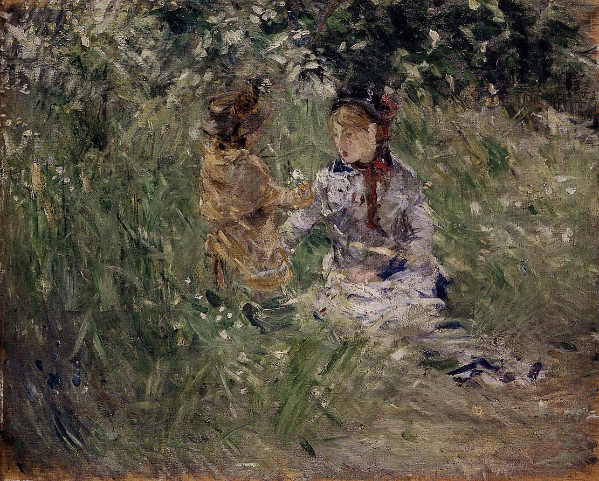

Tags: gardens-and-parks, forests-and-trees
Style: Impressionism
Artist: Morisot Berthe
Title: Julie with Pasie in the Garden at Bougival
Year: 1881
Genre: genre painting
Categories: cliff (49.8%); bluetick (2.1%); Walker_hound (2.1%); hartebeest (1.7%); stone_wall (1.7%)